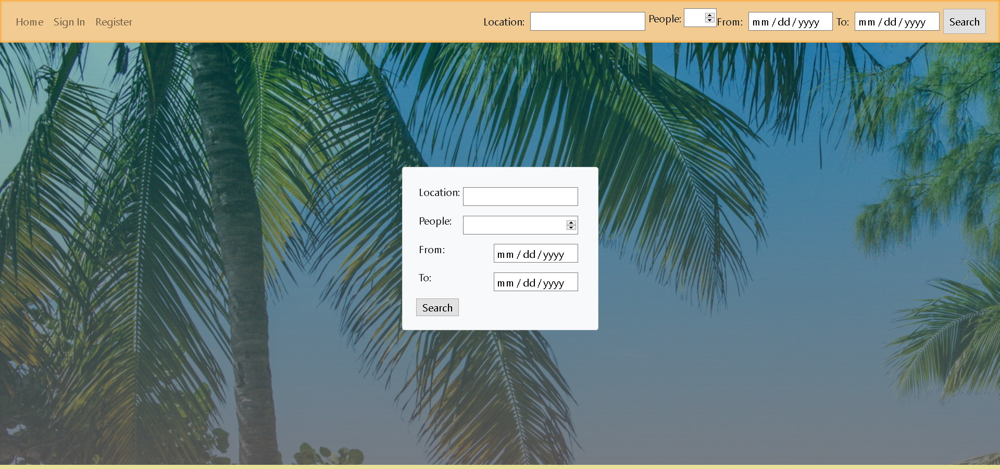

Projects
Skills:


Subway Trip Planner
Ruby terminal application made for a Coder Academy assignment. The application is designed it simulate a subway network and calculate paths for commuters to take. The user can enter origin, destination stations and time to leave and the application returns the path to take with which stations to change at and how many minutes to wait at each station.
GitHub Video Demo

Hotel DB
Rails application made for a Coder Academy assignment. The application is similar to other hotel database websites where owners can post their listing with a number of rooms and manage bookings. Customers can search for a booking by inputing the location, date and no. of people
GitHub Live Site